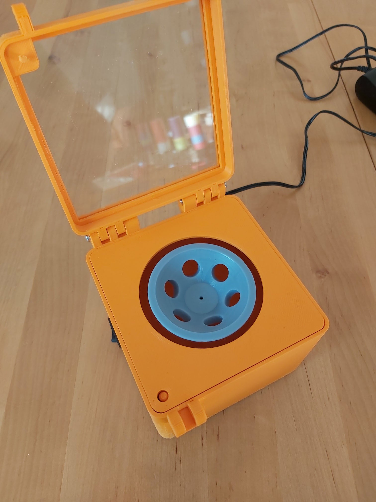

$6 Printed Mini Centrifuge

This 3D printed design for a mini centrifuge caught our eye as a lab hack that is reminiscent of the early days of this blog (UV lamp, Sillouette design cutter). Mini centrifuges are ubiquitous in wet labs. Very simple machines, they are sold by Eppendorf and other scientific manufacturers for $150-200. If your lab has access to a 3D printer, this design can be made for ~$10.
Applied Technology Lab| Progress TH, a Bangkok based magazine and makerspace, produced the designs and shares them through Thingiverse. They include .stl files for all the 3D printed parts as well as the printer and printer settings they used. Electronic diagrams and a brief tutorial video are also linked on the page.
With a few reported reproductions and one apparent modification to make it battery powered (and thus ultra-portable), it seems that the designs are really catching on. The Martin Lab at the University of Waterloo reports spending just $6 to create their version. Pretty cool to see.